| 05 | 보내기 — 봉투가 다시 접히고 꼬리선과 함께 날아감 (하루 3통, 1/3 표시) |
| 06 | 배송 상태 — 오늘 날짜, 편지별 게이지, 왼쪽 아래 반송함 |
| 07 | 마감 20분 전 알림, 게이지 끝 칸 깜빡임 |
| 08 | 마감 30분 뒤 반송 — 흐린 화면 위 "반송되었습니다" |
| 09 | 반송함 — 날짜별로 쌓임 |
| 10 | 하루 마무리 — 마지막 일정 30분 뒤 첫 화면 |
원칙: 반송은 담담하게, 해낸 것은 크게. 죄책감 주는 말은 쓰지 않음. 작업은 Storybook으로 실제 코드 화면을 만들며 진행.
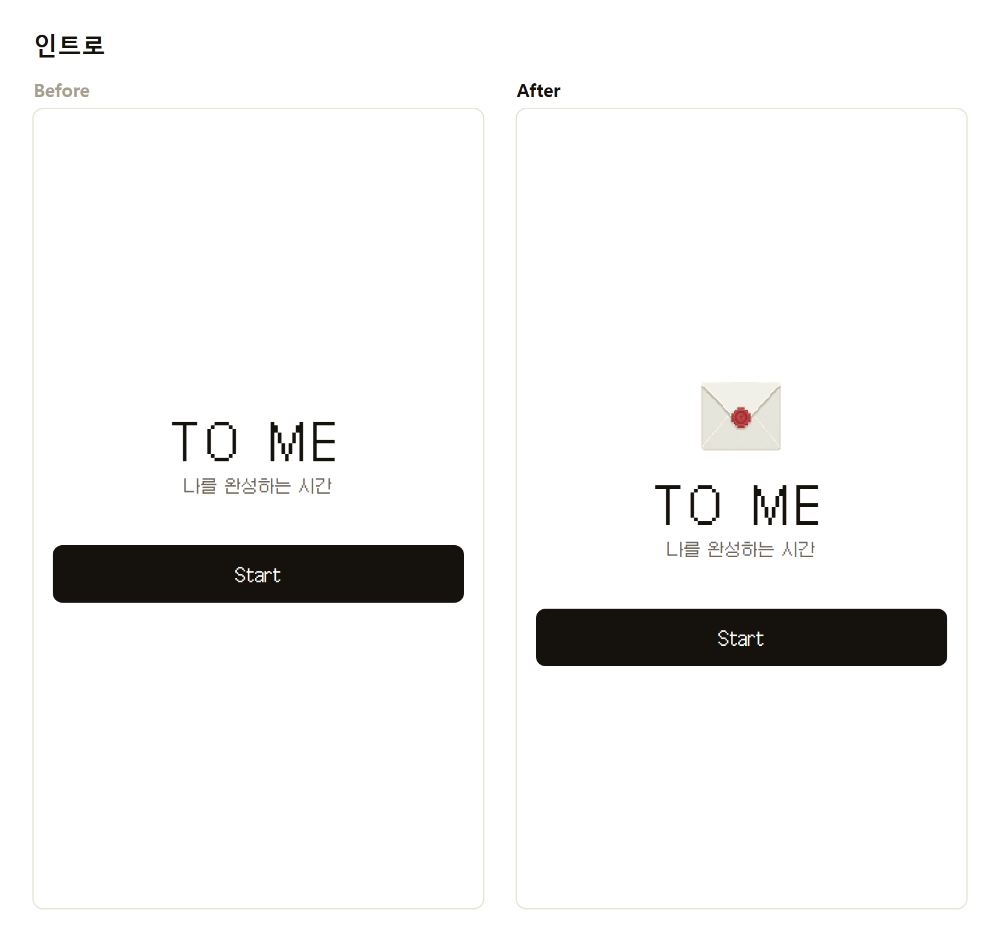
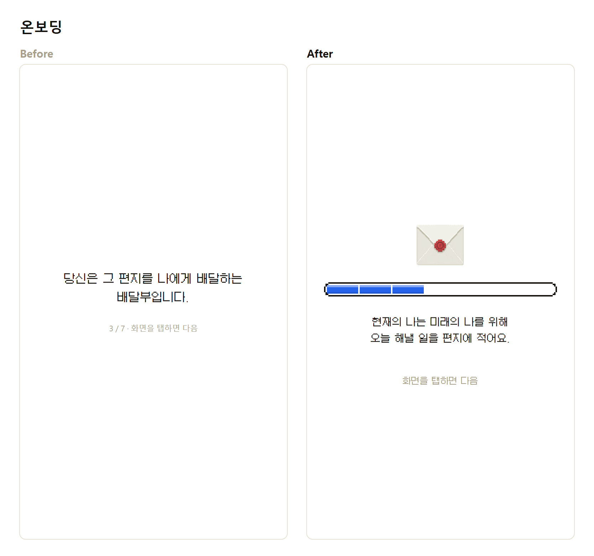
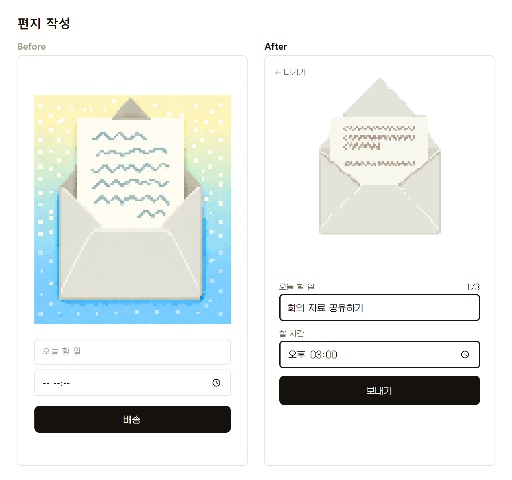
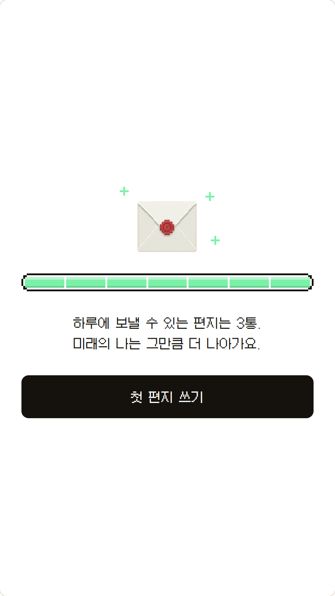
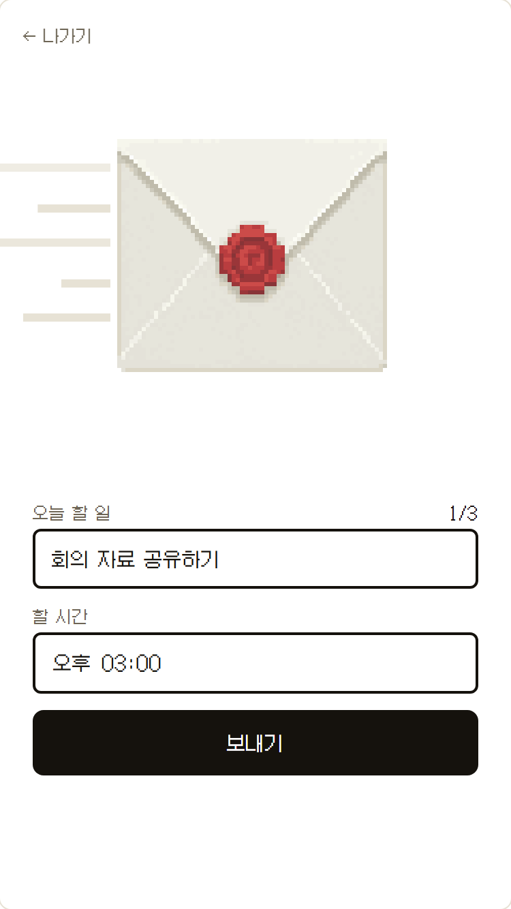
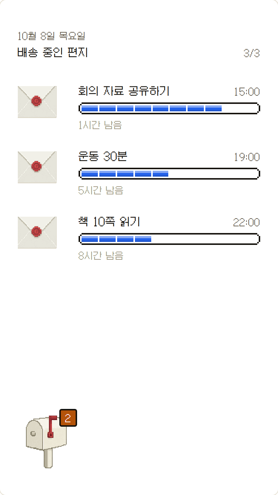
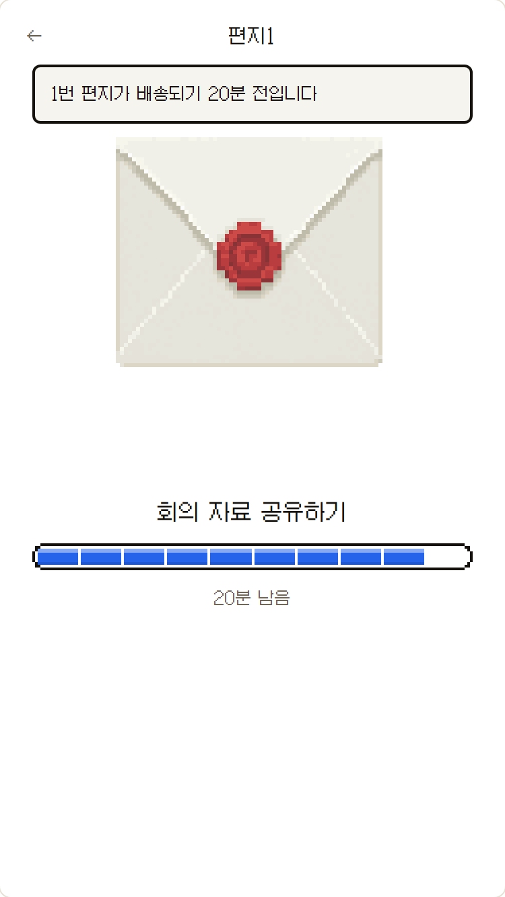
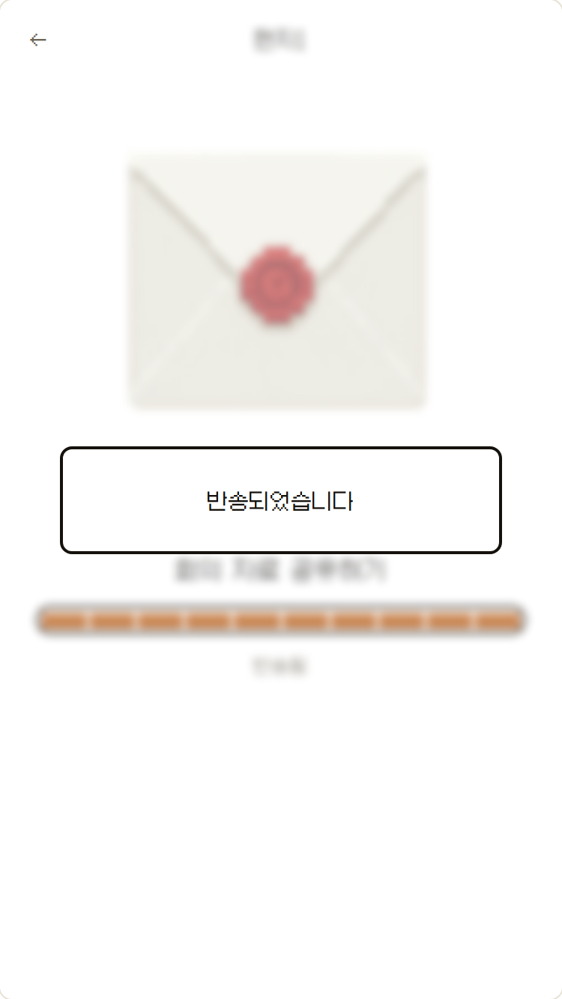
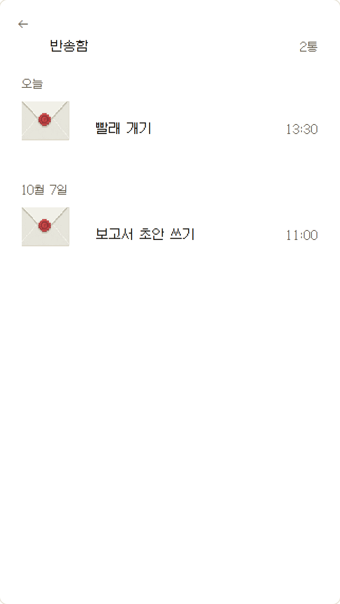
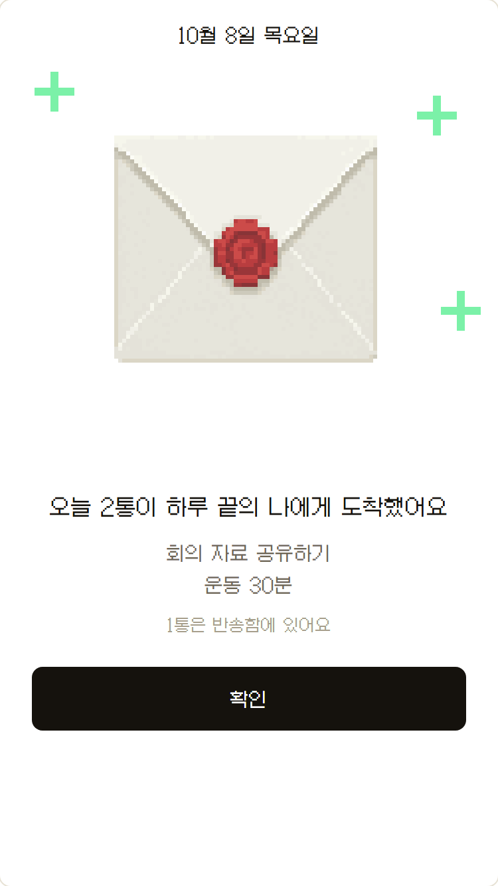
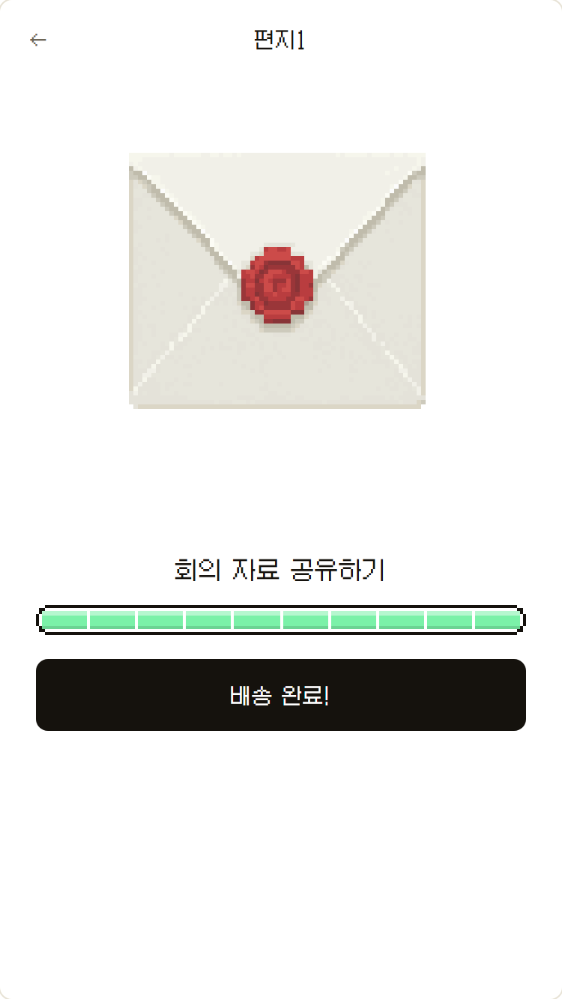
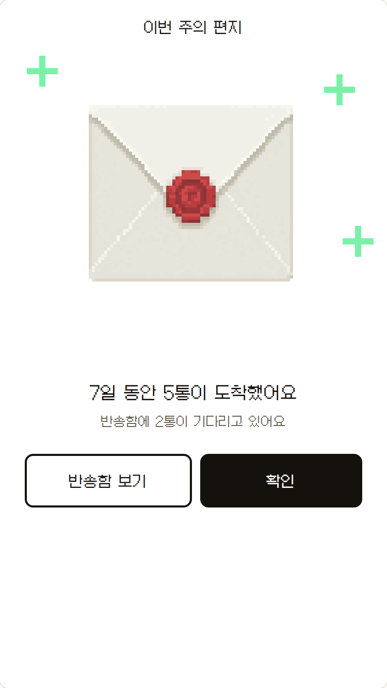